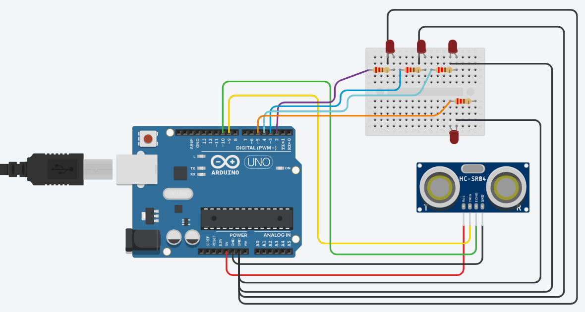

Aim
To measure the water level of a tank using an HC-SR04 ultrasonic sensor and indicate the tank level using four LEDs connected to an Arduino UNO.
About the Experiment
This experiment uses an ultrasonic sensor to measure the distance between the sensor and the water surface. The Arduino uses this distance to calculate the water level inside the tank.
Four LEDs indicate the approximate tank level. As the tank fills, more LEDs turn ON. The calculated distance, water level and percentage are also displayed in the Serial Monitor.
Components Required

Arduino UNO (x1)
Main controller that reads the sensor and controls the LEDs.

HC-SR04 Ultrasonic Sensor (x1)
Measures the distance from the sensor to the water surface.

LEDs (x4)
Indicate the water level at different stages.

220Ω Resistors (x4)
Limit current and protect each LED.

Breadboard (x1)
Used to assemble the circuit without soldering.

Jumper Wires
Used for electrical connections between components.

USB Cable (x1)
Used to program and power the Arduino UNO.
Circuit Diagram
Connect the Arduino UNO, HC-SR04 sensor and four LEDs as shown below.

Hardware Connections
| Component | Pin | Arduino Connection |
|---|---|---|
| HC-SR04 | VCC | 5V |
| HC-SR04 | GND | GND |
| HC-SR04 | TRIG | Digital Pin 9 |
| HC-SR04 | ECHO | Digital Pin 10 |
| LED 1 | Anode (+) | Digital Pin 2 through 220Ω resistor |
| LED 2 | Anode (+) | Digital Pin 3 through 220Ω resistor |
| LED 3 | Anode (+) | Digital Pin 4 through 220Ω resistor |
| LED 4 | Anode (+) | Digital Pin 5 through 220Ω resistor |
| All LEDs | Cathode (-) | GND |
Working Principle
↓
TRIG pin sends an ultrasonic pulse
↓
HC-SR04 receives the reflected echo
↓
Arduino measures echo time
↓
Distance to water surface is calculated
↓
Water Level = Tank Height - Distance
↓
Water level percentage is calculated
↓
LEDs turn ON according to the tank level
↓
Values are displayed in Serial Monitor
↓
Process repeats continuously
LED Level Indication
Procedure
- Place the Arduino UNO, HC-SR04 sensor, LEDs and resistors on the breadboard setup.
- Connect the HC-SR04 VCC pin to 5V and GND pin to Arduino GND.
- Connect the HC-SR04 TRIG pin to Arduino digital pin 9.
- Connect the HC-SR04 ECHO pin to Arduino digital pin 10.
- Connect four LEDs to digital pins 2, 3, 4 and 5 through 220Ω resistors.
- Connect all LED cathodes to GND.
- Connect the Arduino UNO to the computer using the USB cable.
- Open Arduino IDE.
- Select Tools → Board → Arduino UNO.
- Select the correct COM port from Tools → Port.
- Enter the program given below.
- Click Verify and then Upload.
- Open the Serial Monitor and set the baud rate to 9600.
- Change the distance between the ultrasonic sensor and the water surface or an object to observe the LEDs and percentage value.
Arduino Code
// Ultrasonic Water Tank Level Indicator
// Arduino UNO + HC-SR04 + 4 LEDs
const int trigPin = 9;
const int echoPin = 10;
const int led1 = 2; // 25%
const int led2 = 3; // 50%
const int led3 = 4; // 75%
const int led4 = 5; // 100%
// Tank height in cm
const float tankHeight = 100.0;
long duration;
float distance;
float waterLevel;
float percentage;
void setup()
{
Serial.begin(9600);
pinMode(trigPin, OUTPUT);
pinMode(echoPin, INPUT);
pinMode(led1, OUTPUT);
pinMode(led2, OUTPUT);
pinMode(led3, OUTPUT);
pinMode(led4, OUTPUT);
}
void loop()
{
// Send ultrasonic pulse
digitalWrite(trigPin, LOW);
delayMicroseconds(2);
digitalWrite(trigPin, HIGH);
delayMicroseconds(10);
digitalWrite(trigPin, LOW);
// Measure echo time
duration = pulseIn(echoPin, HIGH);
// Convert time into distance in cm
distance = duration * 0.034 / 2.0;
// Calculate water level
waterLevel = tankHeight - distance;
// Prevent invalid values
if (waterLevel < 0)
{
waterLevel = 0;
}
if (waterLevel > tankHeight)
{
waterLevel = tankHeight;
}
// Calculate percentage
percentage = (waterLevel / tankHeight) * 100.0;
// Display values in Serial Monitor
Serial.print("Distance: ");
Serial.print(distance);
Serial.print(" cm");
Serial.print(" | Water Level: ");
Serial.print(waterLevel);
Serial.print(" cm");
Serial.print(" | Tank Level: ");
Serial.print(percentage);
Serial.println("%");
// -------------------------
// LED Level Indication
// -------------------------
if (percentage < 25)
{
// Tank almost empty
digitalWrite(led1, LOW);
digitalWrite(led2, LOW);
digitalWrite(led3, LOW);
digitalWrite(led4, LOW);
}
else if (percentage < 50)
{
// 25% level
digitalWrite(led1, HIGH);
digitalWrite(led2, LOW);
digitalWrite(led3, LOW);
digitalWrite(led4, LOW);
}
else if (percentage < 75)
{
// 50% level
digitalWrite(led1, HIGH);
digitalWrite(led2, HIGH);
digitalWrite(led3, LOW);
digitalWrite(led4, LOW);
}
else if (percentage < 95)
{
// 75% level
digitalWrite(led1, HIGH);
digitalWrite(led2, HIGH);
digitalWrite(led3, HIGH);
digitalWrite(led4, LOW);
}
else
{
// Tank full
digitalWrite(led1, HIGH);
digitalWrite(led2, HIGH);
digitalWrite(led3, HIGH);
digitalWrite(led4, HIGH);
}
delay(500);
}Result
The ultrasonic water tank level indicator was successfully implemented using an Arduino UNO, HC-SR04 ultrasonic sensor and four LEDs. The Arduino calculates the water level percentage from the measured distance and indicates the tank level through the LEDs.
What You Learn
- How an ultrasonic sensor measures distance.
- How to interface the HC-SR04 sensor with Arduino UNO.
- How to calculate distance from ultrasonic echo time.
- How to calculate water level and percentage.
- How to control multiple LEDs using digital output pins.
- How to display sensor values in the Serial Monitor.
- How to use conditions such as if, else if and else in Arduino programming.